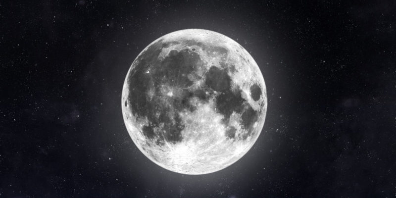

La astronomía es la ventana que nos permite mirar hacia el infinito y más allá. Es una búsqueda incesante de respuestas a las preguntas más profundas y fascinantes que el universo nos plantea. Desde la belleza cautivadora de las estrellas titilantes en una noche despejada hasta los secretos bien guardados de los agujeros negros y las galaxias distantes, la astronomía es la exploración de lo desconocido.

Descubre el Universo: Explora los Misterios Cósmicos y las Maravillas del Espacio Exterior
ASTRO ENTRETENIMIENTO

Descubre el Universo: Explora los Misterios Cósmicos y las Maravillas del Espacio Exterior
ASTRO ENTRETENIMIENTO

Descubre el Universo: Explora los Misterios Cósmicos y las Maravillas del Espacio Exterior
ASTRO ENTRETENIMIENTO
Es un viaje que nos lleva a descubrir mundos lejanos, a comprender los misterios de la vida en la Tierra a través del estudio de otros planetas y contemplar la posibilidad de vida más allá de nuestro pequeño rincón cósmico. En la astronomía, las estrellas son nuestras guías, los planetas nuestros vecinos y las galaxias nuestros destinos.
Pero la astronomía no se trata solo de observar. También implica descifrar los patrones en el cielo, comprender la física de las explosiones estelares y navegar por el tiempo y el espacio a través de la luz que viaja millones de años hasta llegar a nuestros telescopios. Cada descubrimiento en astronomía nos acerca un poco más a desvelar los secretos del cosmos ya comprender nuestro lugar en él.
Quiero saber más
Entonces, ¿estás listo para un emocionante viaje a través del espacio y el tiempo? Únete a nosotros mientras exploramos las maravillas del universo, donde cada estrella es una historia y cada galaxia es un mundo por descubrir. La astronomía te invita a alzar la vista y soñar en grande, porque el cosmos nunca deja de sorprendernos.
Descubre el universo en el Planetario Galileo Galilei. Sum√©rgete en proyecciones cautivadoras que te transportarán a trav√©s del cosmos. Desde planetas lejanos hasta galaxias distantes, explora la inmensidad del espacio. Ideal para estudiantes curiosos y amantes de la astronom√≠a, el Planetario ofrece una experiencia única y educativa. ¬°Embárcate en un viaje fascinante a trav√©s de las estrellas! üåå‚ú®